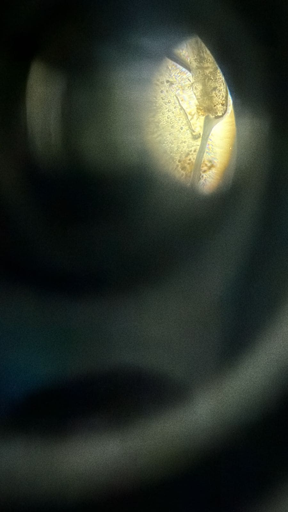
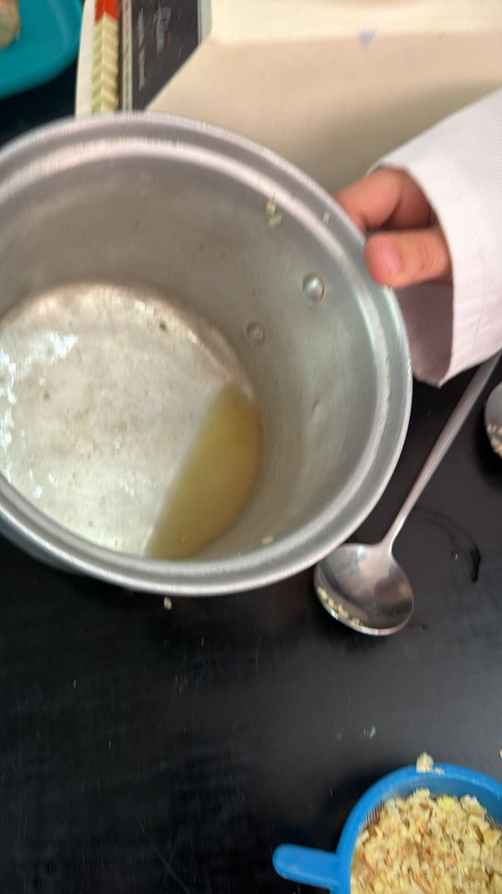
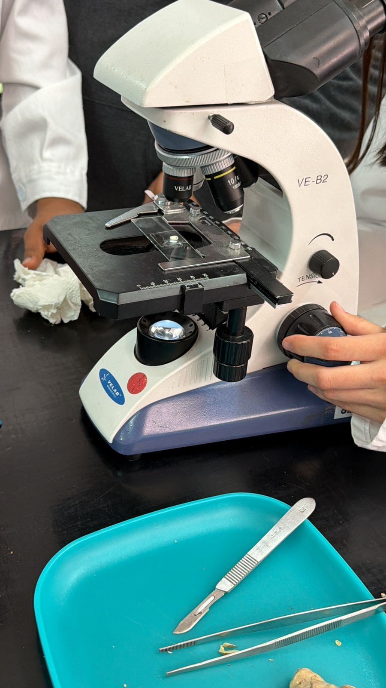
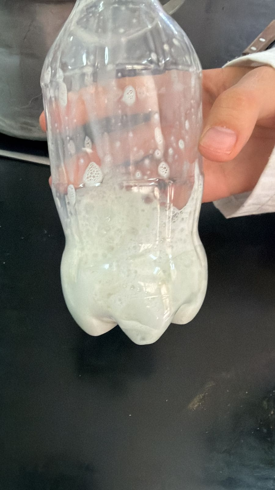
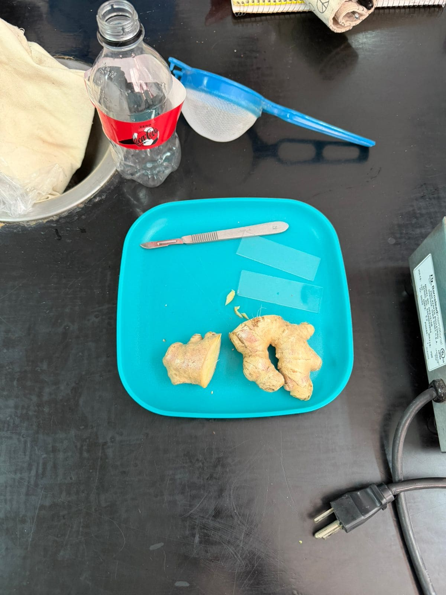

EXPERIENCIAS
Nuestra Experiencia en el Proyecto Transversal: “Del Jengibre”
Al inicio de este proyecto sentimos muchos nervios e incertidumbre, ya que nos tocó trabajar con compañeros diferentes a nuestros amigos de siempre. Pensábamos que sería complicado organizarnos y ponernos de acuerdo, pero conforme fueron pasando los días descubrimos que cada integrante tenía algo importante que aportar. Poco a poco aprendimos a escucharnos, apoyarnos y trabajar juntos, hasta convertirnos en un verdadero equipo.
Este proyecto transversal fue una experiencia muy especial y diferente a las demás actividades escolares que habíamos realizado. No solamente aprendimos sobre el jengibre, sino que también logramos relacionar todas las materias en un solo trabajo. Gracias a esto entendimos que cada asignatura tiene una función importante y que todas pueden conectarse para crear algo mucho más grande y significativo.
Durante semanas trabajamos con dedicación, creatividad y esfuerzo. Desde la investigación, las mediciones y los diseños, hasta la creación de productos y el desarrollo de nuestra página web, cada actividad representó un nuevo reto que nos ayudó a aprender cosas diferentes de una forma más dinámica y divertida.
1. Investigación y ciencia
En Biología comenzamos investigando qué era el jengibre, cuáles eran sus propiedades y de qué manera podía beneficiar a la salud. Observamos su germinación y crecimiento semana tras semana, registrando cada cambio que presentaba la planta. Además, realizamos investigaciones, infografías y un cuento relacionado con el tema, lo cual nos ayudó a comprender mejor toda la información y a desarrollar nuestra creatividad.
Gracias a esta parte del proyecto aprendimos que el jengibre no solamente es una planta, sino también un ingrediente con muchos beneficios y usos en la vida diaria.
2. Matemáticas en acción
Las matemáticas estuvieron presentes durante todo el proyecto y fueron muy importantes para organizar nuestro trabajo. Medimos el crecimiento de la planta, realizamos tablas, gráficas y comparaciones para analizar los resultados obtenidos. También calculamos costos de producción, materiales y cantidades necesarias para elaborar nuestros productos.
Esto nos permitió trabajar con números reales y comprender que las matemáticas son útiles para resolver situaciones de la vida cotidiana y no solo para hacer operaciones en clase.
3. Trabajo digital en equipo
Uno de los retos más interesantes fue la creación de nuestra página web. Todos colaboramos para que quedara organizada, creativa y completa. Cada integrante se encargó de una tarea diferente: algunos diseñaron la portada, otros redactaron información, otros buscaron imágenes, algunos programaron secciones y otros revisaron que todo estuviera correctamente acomodado.
Trabajar en la página web nos ayudó a desarrollar habilidades digitales, a compartir ideas y a aprender a trabajar de manera colaborativa. Al final, nos sentimos orgullosos porque fue un trabajo realizado por todo el equipo.
4. Productos finales
Después de muchos intentos, pruebas y mejoras, logramos crear nuestros productos finales: el “Tónico de Jengibre” y los “Shots de Jengibre”. Durante este proceso investigamos ingredientes, pensamos en las cantidades adecuadas y buscamos la mejor manera de presentar nuestros productos.
También diseñamos etiquetas, empaques y decoraciones para que nuestros productos tuvieran una mejor presentación durante la exposición. Todo esto requirió paciencia, creatividad y trabajo en equipo, pero al final ver los resultados nos hizo sentir muy satisfechos y orgullosos de lo que logramos.
A continuación, se muestran algunas fotografías del proceso de elaboración de nuestros productos, donde se puede observar el esfuerzo, dedicación y compromiso que tuvimos en cada etapa del proyecto.
 |
 |
 |
|
 |
 |
 |
5. Diseño digital
En la materia de diseño digital realizamos el logo oficial del proyecto. Pensamos en colores, formas e ideas que representaran el jengibre y todo el trabajo realizado durante estas semanas. Esta actividad nos permitió usar nuestra imaginación y aprender más sobre diseño y creatividad.
Lo más bonito del proyecto
Lo más bonito de esta experiencia fue descubrir que, aunque al principio no nos conocíamos tanto, pudimos convertirnos en un equipo unido. Aprendimos a escuchar diferentes opiniones, organizarnos mejor y confiar en el trabajo de cada compañero.
Cada integrante aportó algo especial al proyecto: creatividad, ideas, responsabilidad, esfuerzo y dedicación. Gracias a eso logramos sacar adelante todas las actividades y cumplir cada uno de los objetivos propuestos.
Este proyecto no solo nos dejó aprendizajes sobre el jengibre y las materias escolares, también nos enseñó la importancia de la convivencia, la responsabilidad, la comunicación y el trabajo en equipo. Sin duda, fue una experiencia que recordaremos con mucho orgullo y satisfacción.
FOTOGRAFÍAS DE NUESTRAS EXPERIENCIAS
 2026
2026